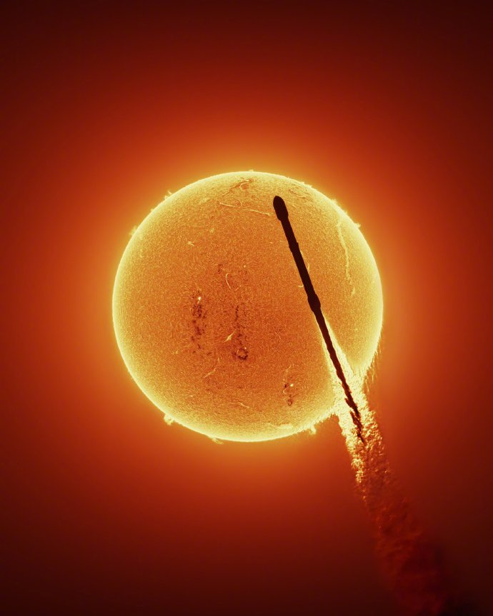

新疆徒步露营指南
行程规划
新疆地域辽阔，选择合适的徒步路线至关重要。我推荐的几条路线包括天山山脉的喀拉峻大草原徒步、塔克拉玛干沙漠边缘的探险路线，以及阿尔金山脉的秘境穿越。
喀拉峻大草原被誉为"空中草原"，海拔在2000-3000米之间，夏季气温适宜，是避暑徒步的绝佳选择。建议行程安排5-7天，从特克斯县出发，沿途可以欣赏到壮观的草原风光和雪山背景。
装备准备
在新疆徒步需要准备专业的装备，特别是应对多变的气候条件。新疆昼夜温差大，即使在夏季，夜间温度也可能降至0℃左右。
必备装备包括：
- 高性能防水登山鞋和备用鞋垫
- 分层着装系统（速干内衣、保暖中层、防风防水外层）
- 四季帐篷和耐低温睡袋（舒适温标至少-5℃）
- 高能量食品和充足的水源（建议携带净水设备）
- GPS设备和纸质地图（部分地区无信号）
- 急救包和应急通讯设备
摄影技巧
新疆的风景壮丽，是摄影的天堂。这里分享一些在徒步过程中拍摄的技巧：
黄金时段拍摄：新疆的日出和日落时间与内地有2小时时差，夏季晚上10点才完全天黑。利用早晚的柔和光线拍摄，能获得更加丰富的色彩和层次感。
星空摄影：新疆地广人稀，光污染少，是拍摄星空的绝佳地点。建议携带稳固的三脚架、快门线和广角大光圈镜头。在喀纳斯、禾木等地，可以拍摄到壮观的银河和星轨。
延时摄影：新疆的天气变化迅速，云层移动快，非常适合拍摄延时视频。记录下风云变幻的过程，能展现新疆独特的自然魅力。
"新疆的星空是摄影师的梦想，纯净的夜空让银河清晰可见，每一颗星星都仿佛触手可及。"
注意事项
1. 尊重当地民族文化，特别是进入少数民族聚居区时，要遵守当地习俗。
2. 办理相关许可证件，部分边境地区需要提前申请边防证。
3. 注意环境保护，践行"无痕山林"原则，将所有垃圾带出自然区域。
4. 做好充分的身体准备，新疆徒步路线海拔较高，建议提前进行适应性训练。
新疆的徒步之旅是一次身体与心灵的双重洗礼，希望这份指南能帮助您更好地规划行程，享受这片神奇土地带来的独特体验。
// 示例：计算徒步时间
function calculateHikingTime(distance, elevationGain) {
const baseTime = distance / 4; // 4 km/h 基础速度
const elevationTime = elevationGain / 300; // 每300米海拔增加1小时
return baseTime + elevationTime;
}